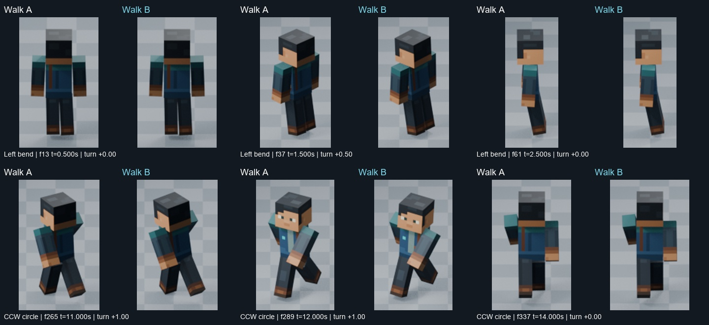
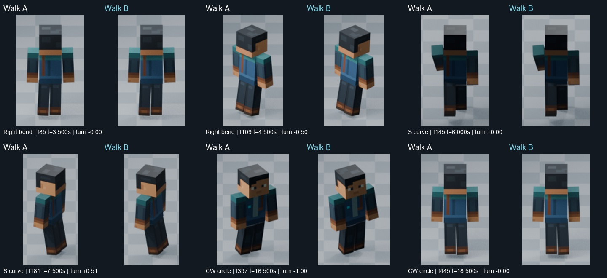
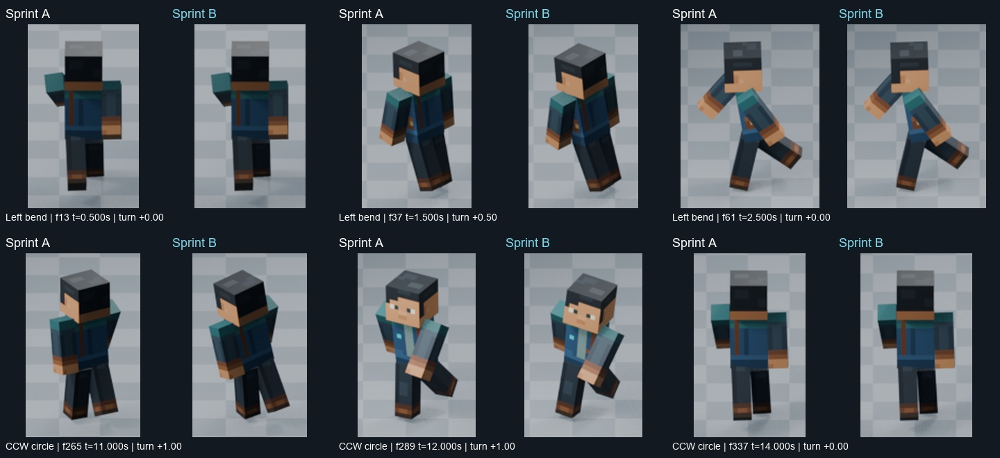
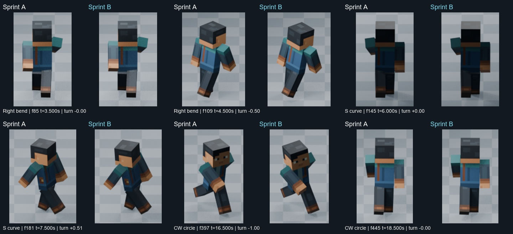
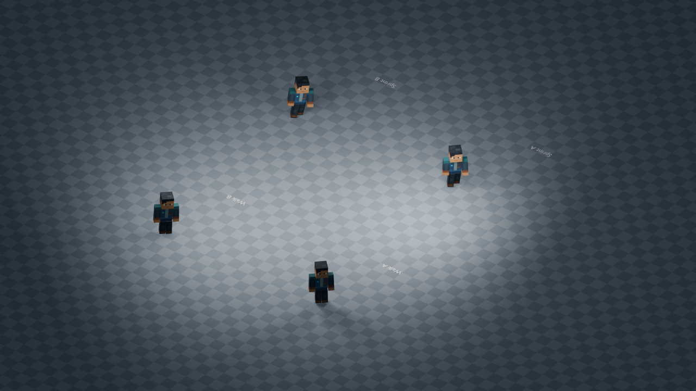
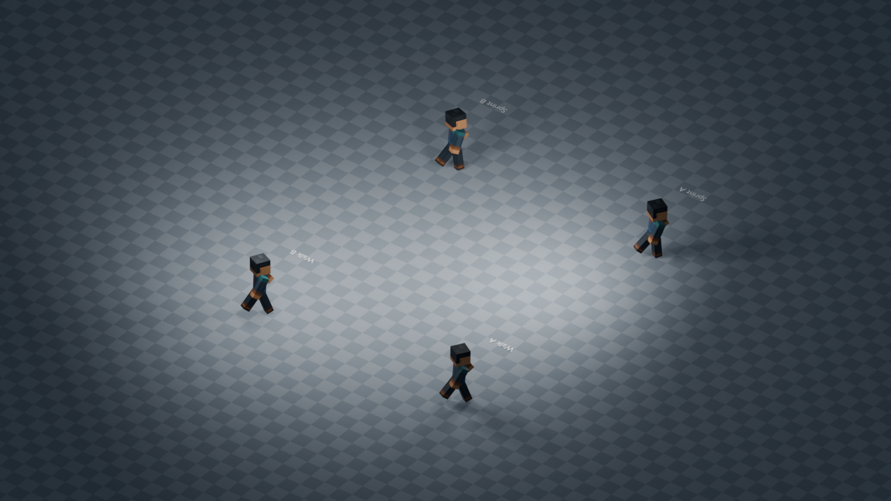
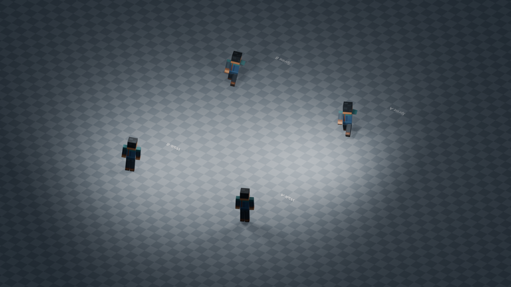
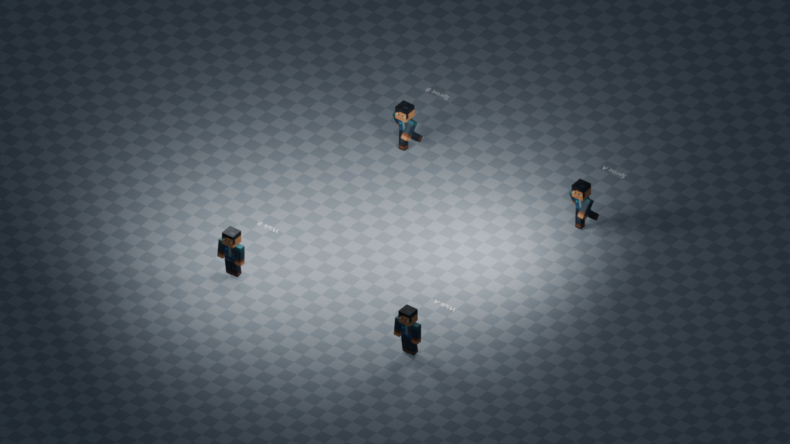

A = preserved R1 gait with path/heading only. B = identical phase, path, cadence and camera with absolute turning-pose blending. Walk above; Sprint below.
24 FPS · 1.0× · 19 seconds · fixed world camera · hard cuts between path tests
These are sustained turning cycles. A separate preview parent carries world translation and yaw. Turn entry/exit does not restart the gait. The circle turn sign stays consistent through every heading.
Open/download full H.264 preview · GIF fallback: left/right bends, first six seconds · Full report
Each A/B pair uses one shared crop and scale. These detail crops remove travel from the sheet only; use the fixed-camera movie to judge world motion. Times refer to the preview, not the source recording.


Sprint — entry circle recovery


Project camera orientation and 14.5-unit vertical scale. The labeled A/B stages carry identical trajectories. This camera is fixed, not orbiting.
Preview t=1.500s

Preview t=12.000s

Preview t=16.500s

Preview t=18.500s

589 original frames decoded and SHA256 verified. Supplied overviews and dense sheets plus additional full-frame samples were inspected. Continuous native playback was not observed. The recording does not establish exact banking angles, head-lead timing or the source algorithm.

Technical checks are not artistic approval. Foot sliding remains; no perfect planting is claimed. Original R1 and weapon assets are preserved; no Godot changes.